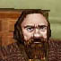

|
完全に参った。武器屋の親父 Groflah は、何を聞いても知らぬ存ぜぬの一点張り。だが他に何の手段も思いつかない。この親父がカギになっているのは恐らく間違いないのだが・・・・。殺してもしょうがないしなぁ。（危険思想）
ここは、クエストの大先輩・Rikka の助言を仰ぐことにする。 |
３月５日
|
昨日の Rikka との会話からわかったことがひとつ。「別の場所に Pop する」、間違いなくそう言っていた。 クェイノスとフリーポートの両方に姿を見せる同一人物も決して少なくはない。それと同じだ。武器屋の２階以外に、Groflah が現われる場所が必ずあるはずだ！ ・・・・最近現われないって言ってたのは大問題だがな。 では、それはどこか。 さて。傾向としてだが、どうもノーラスの連中は、酔っ払った状態で極端に口が軽くなる。守るべき秘密をぺらぺら喋るなどよくある話だ。・・・・そう、酒。どこかで酒を買って持ってくるというのが定番だが、Rikka の「別の場所に Pop」と合わせると、その場所とはすなわち酒場、と見当がつく。ちょっと卑怯くさい解き方になったがまあ許せ。 今になってよく思い出してみると、Groflah 自身、「ここでは」話さない、と言っていたではないか。くっ、もっと早く気づくべきだったか。 幸いというべきか、フリーポートにはとにかく人の集う繁盛した酒場が一件ある。Seaferer's Roost とかいったかな。様々な連中が訪れては、酒を飲み、歌を聴きと、いつでも賑わっている。あそこならば、Groflah が現われる可能性もゼロではない。ダメ元だが、時間はたっぷりある。機会があったら張り込んでみるか。 その機会は、案外早く訪れた。 |
３月７日
|
その日は特にすることもなく、朝からフリーポートをふらふらしていた。ま、せっかくだし、例の酒場 Seaferer's Roost を覗いてみるか。週３回のカラナ往復で鍛えた俺の持久力を見せてくれる。―――と思ったまさにその時に誰かの大声が聞こえてきたのは、偶然以外の何物でもなかった。 「Groflah が現われたぞ！ さあ、みんな経験値を稼げ！」 ほう、経験値？ おいおい、街なかで人殺しか？ ・・・・じゃないな。となると一体、 ・・・・・・ん？ Groflah！？ Groflah Steadirt か！？ 釣り具屋の親父を踏み倒して俺は酒場へ走った。勢い良くドアを開ける。 酒臭い。アルコール耐性の低い俺はその場でめまいを覚えた。酒場の奥で、数人に囲まれ、酌をされては片端からがぶ飲みしているのは・・・・間違いない、あのドワーフの親父、Groflah Steadirt だ。おいおい、ペースの早いこと早いこと。大丈夫か？ さて、俺のことを覚えているかどうか知らないが、さりげなく声をかけてみよう。 |
|  | Groflah Steadirt | |
| Greeting Shriast. Join in the [ celebration ]. Have a few drinkes, alas, no [ Tumpy Tonics ]. | ||
| おう、ごきげんよう Shriast。[ お祝い ] に参加せんかね。ささ、飲みたまえ。 おお、何てこった、[ Tumpy Tonics ] がないじゃないか。 | ||
|
っていうか俺この親父知ってんじゃーん！！（涙 ここでは軽く省略するが、Freeport Militia の酒場が別の場所にできて Militia 連中がそっちに行ったんで、そのお祝いに酒を飲もうぜ、という話をしていたはずだ。それで、酒といえば Tumpy Tonic だ、と。 そうかい・・・・経験値ってのはクエスト経験値か。Tumpy Tonic の親父のアオリ云々も納得が行った。まあそれは置いておくとして、そう、俺は俺の用事だ。Zimel の行方を聞かなくては。この親父が飲み終わるのを待って、問いを切り出すことにした。 ・・・・・・・・・・・。 ちっとも終わらねぇ。（泣 |